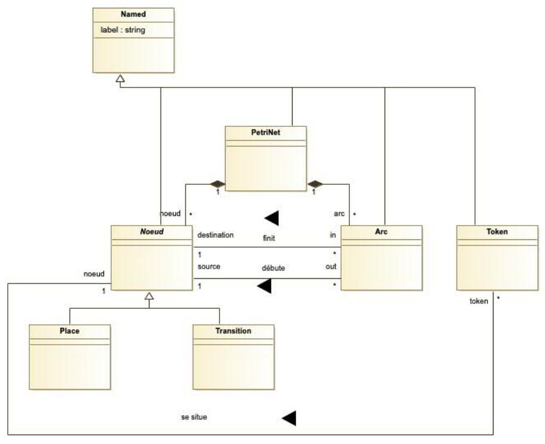

4 Practical Exercises: Class Diagrams
This chapter provides a series of practical exercises to apply the concepts of UML Class Diagrams discussed previously. Each exercise presents a problem description followed by a detailed solution and an explanation of the key concepts illustrated.
4.0.1 Exercise 1: People and Cars
Problem: Model a system of people and cars. A person is identified by a unique number and is the sole owner of the cars they possess. A car is characterized by a license plate number, a brand, and a date of first registration.

Correction Details:
- Personne (Person) Class:
- Attributes: Contains
num: integeras a unique identifier. - Multiplicity: The
*on thevoiture(car) role indicates that an instance ofPersonnecan be linked to zero, one, or many instances ofVoiture.
- Attributes: Contains
- Voiture (Car) Class:
- Attributes: Contains
numeroPlaque: string,marque: string, anddateMiseCirculation. - Multiplicity: The
1on thepropriétaire(owner) role is a crucial constraint. It means an instance ofVoituremust be linked to exactly one instance ofPersonne. This directly models the “sole owner” requirement from the problem description.
- Attributes: Contains
- possède (owns) Association:
- This association connects the two classes. The name
possèdeclarifies the nature of the relationship. - The role names
propriétaireandvoiturespecify the function each class plays in the relationship, making the diagram easier to read and understand.
- This association connects the two classes. The name
Key Concepts Illustrated: This introductory exercise is designed to solidify several fundamental concepts:
- Class: A class is represented as a rectangle containing its name and attributes. It acts as a blueprint for objects.
- Association: An association models a relationship between two classes. Naming the association and its roles is a critical best practice for clarity.
- Multiplicities (Cardinalities): This is the most important concept in this exercise. Multiplicities are constraints that define the exact number of instances that can participate in a relationship, allowing the model to precisely capture business rules like “a car has a single owner”.
4.0.2 Exercise 2: Company Organization
Problem: Model a company’s organization. A department is identified by a number and has a location. An employee has a unique number within their department (but not necessarily within the company), a name, a role, and the department they work in. An enterprise is composed of departments.

Correction Details:
Entreprise (Company) Class: The central element of the model. The problem states an enterprise is composed of departments, which strongly implies a whole-part relationship where the parts (departments) cannot exist without the whole. This is modelled with a Composition (filled diamond) relationship to
Departement. The multiplicity1..*signifies that a company must have at least one department.Departement Class:
- It has a
numero: integeras an attribute. The problem states an employee’s number is unique within their department, which means the department number itself doesn’t have to be unique across the entire company (though it often is in reality). - It is linked to
Localisationwith a1..*multiplicity, meaning a department must have at least one location. - It has two distinct associations with the
Employeclass:- The
travail(working in) association has a*multiplicity, meaning a department has zero or more employees. - The
dirige(manage) association links a department to exactly onedirecteur(manager), who is anEmploye.
- The
- It has a
Employe Class:
- The diagram shows the attributes
matricule: integer,nom: string,prenom: string,age: integer, andgrade: stringfor this class. - Important Note: The problem statement specifies that the employee’s number (
matricule) is unique within a department, not across the entire company. modelling it as a direct attribute is a valid choice, and this uniqueness constraint would typically be managed at a higher level or with a formal constraint language like OCL. - The association to
Departementhas a multiplicity of0..1, meaning an employee works for at most one department. - An employee (multiplicity of
1) can manage multiple departments, as shown by thedirecteurrole on thedirige(manage) association, which has a multiplicity of*on theDepartementside.
- The diagram shows the attributes
Key Concepts Illustrated:
- Composition: This exercise provides a classic example of Composition. The existential dependency is key: a
Departementis fundamentally part of anEntreprise. If the company ceases to exist, its departments do as well. This is a much stronger and more precise relationship than a simple association or aggregation. - Multiple Associations between Classes: It is common for two classes to be related in more than one way. Here, an
Employehas a relationship of “working in” aDepartementand a separate relationship of “managing” aDepartement. Using distinct, named associations is crucial to model these different roles accurately.
4.0.3 Exercise 3: Geometric Figures
Problem: A geometric figure can be either simple or composite. A composite figure is made up of several other figures. A simple figure can be a point, a line, a circle, or a square. Any figure can be drawn or translated.

Correction Details:
FigureClass: This class is the core of the hierarchy. It is abstract (indicated by the italicized name) because there is no such thing as a generic “Figure” in this system; a figure must be either simple or composite. It defines a common interface for all figures by declaring two abstract operations:dessiner()andtranslater(). Any class that inherits fromFigurewill be required to provide its own implementation for these methods.Generalization Hierarchy: The model uses Generalization (inheritance) to create a clear taxonomy.
FigureSimpleandFigureComposeeboth inherit fromFigure. This establishes the primary classification.FigureSimpleacts as another superclass for the figure types:Point,Ligne,Cercle, andCarre. This creates a neat, two-level hierarchy.
FigureComposeeClass: This class models a figure that is made up of other figures.- The relationship between
FigureComposeeandFigureis modelled using Aggregation (the hollow diamond). This is a crucial design choice. It’s a “whole-part” relationship, but it’s “weak.” If aFigureComposeeis deleted, theFigureit was composed of are not necessarily deleted, as they could be part of another composite figure or exist independently. The1..*multiplicity indicates that a composite figure must contain at least one other figure.
- The relationship between
Key Concepts Illustrated:
- Abstraction & Inheritance: This is the central theme of the exercise. A common interface (
dessiner(),translater()) is defined in an abstract superclass (Figure) and inherited by all subclasses. This allows us to treat all figures uniformly, regardless of their specific type. - Aggregation vs. Composition: This exercise provides a classic example of when to use Aggregation. Since a
Figurecan exist on its own or be part of multiple composite figures, its lifetime is not tied to a single “whole.” This makes the weaker “has-a” relationship of Aggregation the correct choice over the stronger “owns-a” relationship of Composition. - Polymorphism: This is the powerful result of the abstraction and inheritance structure. Thanks to polymorphism, we can have a collection of
Figureobjects and call thedessiner()method on each one. The system will automatically execute the correct implementation ofdessiner()based on the object’s actual type (Point,Cercle,FigureComposee, etc.). This allows for highly flexible and extensible code.
4.0.4 Exercise 4: Family Links
Problem: Define a schema describing the family links of a population of people, identifiable by their national register number.

Correction Details:
PersonneClass: This single class is used to model all individuals in the system. It contains anumeroRegistre: integerattribute, which serves as a unique identifier for each person.“épouse” (spouse) Association: This is a reflexive association, meaning it connects the
Personneclass to itself. It models the marriage relationship.- Roles: The roles
conjoint(e)andpersonneare used to clarify the nature of the link. - Multiplicities: The
0..1multiplicity on both ends is a critical constraint. It precisely models a monogamous relationship, where a person can have either zero or one spouse at a time.
- Roles: The roles
“a” (parent/child) Association: This is a second reflexive association on the
Personneclass, modelling parent-child relationships.- Roles: The roles
parentandenfantare absolutely essential here to make the diagram unambiguous. They allow us to read the relationship in two directions: aparent“has” anenfant, and anenfant“has” aparent. - Multiplicities: The cardinalities are key to capturing the rules of the domain: a person must have exactly
2parents, while a person acting as aparentcan have zero, one, or many (*) children.
- Roles: The roles
Key Concepts Illustrated:
- Reflexive Association: This exercise is a classic example of how a class can be related to itself. This pattern is fundamental for modelling any kind of network or hierarchical structure, such as organizational charts, social networks, or, as seen here, family trees.
- The Importance of Roles: In reflexive associations, role names are not just helpful; they are indispensable. Without them, it would be impossible to distinguish a parent from a child or a spouse from themselves. They are the primary tool for removing ambiguity in these situations.
- modelling Domain Constraints: The power of a class diagram comes from its ability to enforce real-world rules through multiplicities. The constraints
0..1for a spouse and2for parents are not arbitrary; they are a direct translation of the rules of our specific domain into a formal model.
4.0.5 Exercise 5: Hotel
Problem: A hotel is composed of at least two “rooms”. Each room consists of several parts such as bedrooms, washrooms, living rooms, and meeting rooms. Each room has a minimum of one bedroom and one washroom. The washrooms can be bathrooms (with a tub) or shower rooms. A room is also characterized by a price and a number. The hotel itself has a category, and an address. Furthermore, the hotel can host clients, employ staff, and is managed by a staff member.

Correction Details:
PersonneGeneralization: The diagram correctly uses Inheritance to model that bothClientandPersonnelare types ofPersonne. This is a classic “is-a” relationship that factors out common attributes (likenom,age,adresse) into a general superclass, avoiding redundancy.Nested Compositions (Whole-Part Relationships): The model features two levels of Composition, indicated by the filled diamonds. This choice is critical and deliberate:
- Hôtel-Chambre: An
Hôtelis composed of2..*(at least two)Chambre. The filled diamond signifies that aChambre’s existence is dependent on theHôtel. If the hotel is demolished, its rooms cease to exist. - Chambre-Pièce: Similarly, a
Chambreis composed of2..*Pièce(parts). APièce(like a specific bedroom or bathroom) cannot exist independently of the room it belongs to. This creates a strong structural hierarchy.
- Hôtel-Chambre: An
PièceHierarchy: ThePièceclass itself is the root of another inheritance hierarchy. It’s an abstract superclass for more specific types likeSalleDeReunion,Salon,ChambreACoucherandSalleDEau.SalleDEauis further specialized intoSalleDeBainandSalleDeDouche. This demonstrates how inheritance can be used to classify and organize related concepts.Client Associations: The
Clientclass is central to two key relationships:- The
héberge(hosts) association linksHôteltoClient. An hotel can host zero or more (*) clients, and a client is hosted by exactly one (1) hotel. - The
occupe(occupies) association linksClienttoChambre. A client can occupy one or more (1..*) rooms, and a room can be occupied by zero or more (*) clients (e.g., a family in one room).
- The
Associations with
Personnel: TheHôtelclass has multiple, distinct associations with thePersonnelclass, highlighting how different relationships can coexist:emploie(employs): A general association indicating that a hotel employs one or more (1..*) staff members.dirige(manages): A more specific association with adirecteurrole, indicating that the hotel is managed by exactly one (1) member of staff. This shows how roles can be used to add precision to a relationship.
Key Concepts Illustrated:
- Combining Relationship Types: This is the most important takeaway. A real-world model rarely uses just one type of relationship. This exercise skillfully combines Generalization, Composition, and Association to create a rich and accurate representation of the domain.
- Multiple, Overlapping Hierarchies: This exercise perfectly illustrates how a system can feature different kinds of hierarchies simultaneously.
- There is a clear “is-part-of” hierarchy established through Composition: An
Hôtelis composed ofChambres, which are in turn composed ofPièces. - Running in parallel, there are two distinct “is-a” hierarchies established through Inheritance:
- The first classifies people:
ClientandPersonnelare specific types ofPersonne. - The second classifies the parts of a room:
ChambreACoucher,SalleDEau,Salon, andSalleDeReunionare all types ofPièce. This hierarchy goes even deeper, asSalleDeBainandSalleDeDoucheare specific types ofSalleDEau. Understanding how to model these different, coexisting structures is a key skill in object-oriented analysis.
- The first classifies people:
- There is a clear “is-part-of” hierarchy established through Composition: An
- The Power of Constraints: The specific multiplicities (
2..*,1, etc.) are not arbitrary. They are a direct translation of the problem description’s rules (“at least two rooms”, “managed by a staff member”) into the formal language of UML, ensuring the model is precise.
4.0.6 Exercise 6: Petri Net
Problem: A Petri net is a directed graph composed of places, transitions, and arcs. An arc always connects two nodes of different types: either a place and a transition, or the reverse.
Model a class diagram to represent Petri nets, both with and without tokens. What is the difference?

Correction Details:
PetriNetClass: This class acts as the root of the model. It has a Composition relationship (filled diamond) withNœud(Node) andArc. This is a critical choice: it signifies that the nodes and arcs are integral parts of a specific Petri Net and cannot exist independently. If aPetriNetis deleted, all its constituent elements are deleted as well.Nœud(Node) Hierarchy and its Associations:Nœudis an abstract class, indicated by its italicized name. This is because a node in a Petri Net must be either aPlaceor aTransition; it cannot be just a generic “Node”.PlaceandTransitionare concrete classes that inherit fromNœud, correctly modelling the “is-a” relationship.- The
Nœudclass is connected to theArcclass via two associations:débute(starts) andfinit(ends). The multiplicities must be read in both directions:- From the
Arc’s perspective: AnArcmust have exactly one sourceNœudand exactly one destinationNœud. This is shown by the multiplicity of1at theNœudend of both associations. - From the
Nœud’ perspective: ANœudcan be the source of zero or more (*)Arcand the destination of zero or more (*)Arc. This is shown by the*multiplicity at theArcend of the associations.
- From the
ArcClass and its Associations:- An
Archas two mandatory (1) associations with theNœudclass: one for its source (débute) and one for its destination (finit). This accurately models that every arc connects exactly two nodes. - The problem states that an arc must connect a
Placeto aTransitionor vice-versa. This is a complex constraint that is difficult to represent visually in a class diagram alone. It would typically be specified using a formal constraint language like OCL (Object Constraint Language).
- An
TokenClass:- The
Tokenclass represents the dynamic part of the model. Its associationse situe(is located) connects it to theNœudclass. - Multiplicities: The cardinalities are critical. The
*(many) on theTokenside and1(exactly one) on theNœudside mean that aNœudcan contain zero or moreToken, but aTokenmust be located in exactly oneNœudat any given time.
- The
Key Concepts Illustrated:
- modelling a Meta-Structure (Metamodelling): This is the most advanced concept in these exercises. The class diagram is not modelling a typical business domain (like a hotel or a company). Instead, it is modelling the structure of another model, the Petri Net. This is a powerful technique used to define the “rules” of a language or a diagramming technique.
- Static vs. Dynamic State: This exercise perfectly illustrates the difference between modelling structure and state.
- Without the
Tokenclass: The diagram would only describe the static structure of the Petri Net graph (which places and transitions exist and how they are connected by arcs). - With the
Tokenclass: The model can now represent the dynamic state of the network at any given moment (i.e., the “marking” of the net). The number and location of tokens are what determine which transitions can be fired, allowing the model to represent the system’s behaviour over time.
- Without the